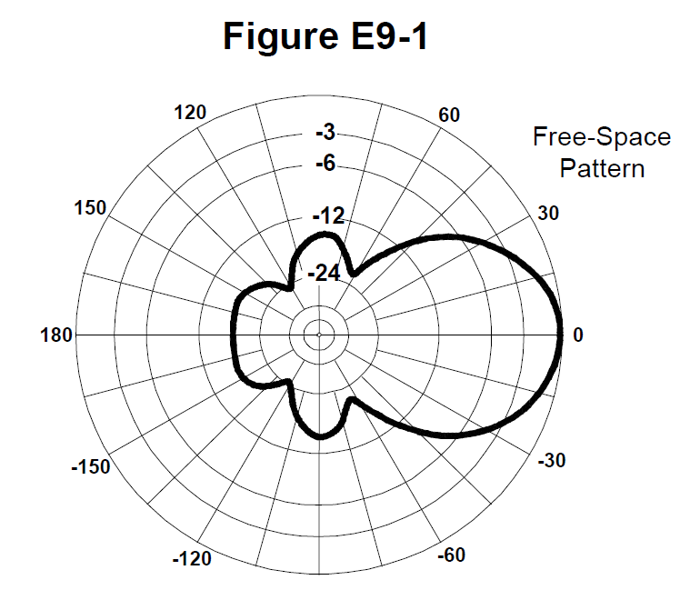
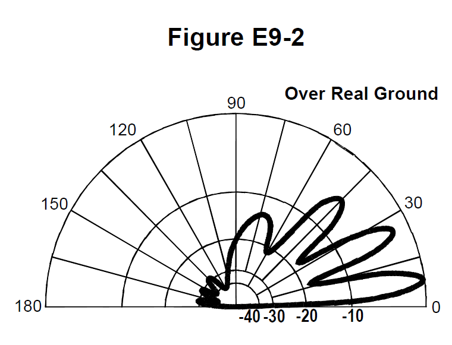
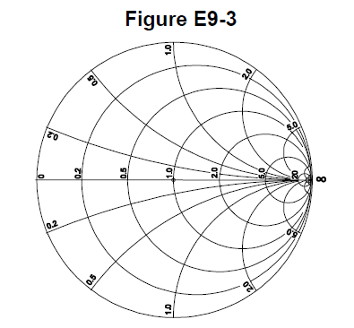

All 93 Ham Radio Amateur Extra questions for E9 Antennas & Transmission Lines with the correct answers marked, from the official 2024-2028 question pool. Test yourself with the free practice exam.
E9A01
What is an isotropic radiator?
A. A calibrated, unidirectional antenna used to make precise antenna gain measurements
B. An omnidirectional, horizontally polarized, precisely calibrated antenna used to make field measurements of antenna gain
C. A hypothetical, lossless antenna having equal radiation intensity in all directions used as a reference for antenna gain ✓
D. A spacecraft antenna used to direct signals toward Earth
E9A02
What is the effective radiated power (ERP) of a repeater station with 150 watts transmitter power output, 2 dB feed line loss, 2.2 dB duplexer loss, and 7 dBd antenna gain?
A. 469 watts
B. 78.7 watts
C. 420 watts
D. 286 watts ✓
E9A03
What term describing total radiated power takes into account all gains and losses?
A. Power factor
B. Half-power bandwidth
C. Effective radiated power ✓
D. Apparent power
E9A04
Which of the following factors affect the feed point impedance of an antenna?
A. Transmission line length
B. Antenna height ✓
C. The settings of an antenna tuner at the transmitter
D. The input power level
E9A05
What does the term “ground gain” mean?
A. The change in signal strength caused by grounding the antenna
B. The gain of the antenna with respect to a dipole at ground level
C. To force net gain to 0 dB by grounding part of the antenna
D. An increase in signal strength from ground reflections in the environment of the antenna ✓
E9A06
What is the effective radiated power (ERP) of a repeater station with 200 watts transmitter power output, 4 dB feed line loss, 3.2 dB duplexer loss, 0.8 dB circulator loss, and 10 dBd antenna gain?
A. 317 watts ✓
B. 2,000 watts
C. 126 watts
D. 300 watts
E9A07
What is the effective isotropic radiated power (EIRP) of a repeater station with 200 watts transmitter power output, 2 dB feed line loss, 2.8 dB duplexer loss, 1.2 dB circulator loss, and 7 dBi antenna gain?
A. 159 watts
B. 252 watts ✓
C. 632 watts
D. 63.2 watts
E9A08
Which frequency band has the smallest first Fresnel zone?
A. 5.8 GHz ✓
B. 3.4 GHz
C. 2.4 GHz
D. 900 MHz
E9A09
What is antenna efficiency?
A. Radiation resistance divided by transmission resistance
B. Radiation resistance divided by total resistance ✓
C. Total resistance divided by radiation resistance
D. Effective radiated power divided by transmitter output
E9A10
Which of the following improves the efficiency of a ground-mounted quarter-wave vertical antenna?
A. Installing a ground radial system ✓
B. Isolating the coax shield from ground
C. Shortening the radiating element
D. All these choices are correct
E9A11
Which of the following determines ground losses for a ground-mounted vertical antenna operating on HF?
A. The standing wave ratio
B. Distance from the transmitter
C. Soil conductivity ✓
D. Take-off angle
E9A12
How much gain does an antenna have compared to a half-wavelength dipole if it has 6 dB gain over an isotropic radiator?
A. 3.85 dB ✓
B. 6.0 dB
C. 8.15 dB
D. 2.79 dB
E9B01
What is the 3 dB beamwidth of the antenna radiation pattern shown in Figure E9-1?

A. 75 degrees
B. 50 degrees ✓
C. 25 degrees
D. 30 degrees
E9B02
What is the front-to-back ratio of the antenna radiation pattern shown in Figure E9-1?
A. 36 dB
B. 14 dB
C. 24 dB
D. 18 dB ✓
E9B03
What is the front-to-side ratio of the antenna radiation pattern shown in Figure E9-1?
A. 12 dB
B. 24 dB
C. 18 dB
D. 14 dB ✓
E9B04
What is the front-to-back ratio of the radiation pattern shown in Figure E9-2?

A. 15 dB
B. 28 dB ✓
C. 3 dB
D. 38 dB
E9B05
What type of antenna pattern is shown in Figure E9-2?
A. Elevation ✓
B. Azimuth
C. Near field
D. Polarization
E9B06
What is the elevation angle of peak response in the antenna radiation pattern shown in Figure E9-2?
A. 45 degrees
B. 75 degrees
C. 7.5 degrees ✓
D. 25 degrees
E9B07
What is the difference in radiated power between a lossless antenna with gain and an isotropic radiator driven by the same power?
A. The power radiated from the directional antenna is increased by the gain of the antenna
B. The power radiated from the directional antenna is stronger by its front-to-back ratio
C. They are the same ✓
D. The power radiated from the isotropic radiator is 2.15 dB greater than that from the directional antenna
E9B08
What is the far field of an antenna?
A. The region of the ionosphere where radiated power is not refracted
B. The region where radiated power dissipates over a specified time period
C. The region where radiated field strengths are constant
D. The region where the shape of the radiation pattern no longer varies with distance ✓
E9B09
What type of analysis is commonly used for modeling antennas?
A. Graphical analysis
B. Method of Moments ✓
C. Mutual impedance analysis
D. Calculus differentiation with respect to physical properties
E9B10
What is the principle of a Method of Moments analysis?
A. A wire is modeled as a series of segments, each having a uniform value of current ✓
B. A wire is modeled as a single sine-wave current generator
C. A wire is modeled as a single sine-wave voltage source
D. A wire is modeled as a series of segments, each having a distinct value of voltage across it
E9B11
What is a disadvantage of decreasing the number of wire segments in an antenna model below 10 segments per half-wavelength?
A. Ground conductivity will not be accurately modeled
B. The resulting design will favor radiation of harmonic energy
C. The computed feed point impedance may be incorrect ✓
D. The antenna will become mechanically unstable
E9C01
What type of radiation pattern is created by two 1/4-wavelength vertical antennas spaced 1/2-wavelength apart and fed 180 degrees out of phase?
A. Cardioid
B. Omni-directional
C. A figure-eight broadside to the axis of the array
D. A figure-eight oriented along the axis of the array ✓
E9C02
What type of radiation pattern is created by two 1/4-wavelength vertical antennas spaced 1/4-wavelength apart and fed 90 degrees out of phase?
A. Cardioid ✓
B. A figure-eight end-fire along the axis of the array
C. A figure-eight broadside to the axis of the array
D. Omni-directional
E9C03
What type of radiation pattern is created by two 1/4-wavelength vertical antennas spaced 1/2-wavelength apart and fed in phase?
A. Omni-directional
B. Cardioid
C. A figure-eight broadside to the axis of the array ✓
D. A figure-eight end-fire along the axis of the array
E9C04
What happens to the radiation pattern of an unterminated long wire antenna as the wire length is increased?
A. Fewer lobes form with the major lobes increasing closer to broadside to the wire
B. Additional lobes form with major lobes increasingly aligned with the axis of the antenna ✓
C. The elevation angle increases, and the front-to-rear ratio decreases
D. The elevation angle increases, while the front-to-rear ratio is unaffected
E9C05
What is the purpose of feeding an off-center-fed dipole (OCFD) between the center and one end instead of at the midpoint?
A. To create a similar feed point impedance on multiple bands ✓
B. To suppress off-center lobes at higher frequencies
C. To resonate the antenna across a wider range of frequencies
D. To reduce common-mode current coupling on the feed line shield
E9C06
What is the effect of adding a terminating resistor to a rhombic or long-wire antenna?
A. It reflects the standing waves on the antenna elements back to the transmitter
B. It changes the radiation pattern from bidirectional to unidirectional ✓
C. It changes the radiation pattern from horizontal to vertical polarization
D. It decreases the ground loss
E9C07
What is the approximate feed point impedance at the center of a two-wire half-wave folded dipole antenna?
A. 300 ohms ✓
B. 72 ohms
C. 50 ohms
D. 450 ohms
E9C08
What is a folded dipole antenna?
A. A dipole one-quarter wavelength long
B. A center-fed dipole with the ends folded down 90 degrees at the midpoint of each side
C. A half-wave dipole with an additional parallel wire connecting its two ends ✓
D. A dipole configured to provide forward gain
E9C09
Which of the following describes a G5RV antenna?
A. A wire antenna center-fed through a specific length of open-wire line connected to a balun and coaxial feed line ✓
B. A multi-band trap antenna
C. A phased array antenna consisting of multiple loops
D. A wide band dipole using shorted coaxial cable for the radiating elements and fed with a 4:1 balun
E9C10
Which of the following describes a Zepp antenna?
A. A horizontal array capable of quickly changing the direction of maximum radiation by changing phasing lines
B. An end-fed half-wavelength dipole ✓
C. An omni-directional antenna commonly used for satellite communications
D. A vertical array capable of quickly changing the direction of maximum radiation by changing phasing lines
E9C11
How is the far-field elevation pattern of a vertically polarized antenna affected by being mounted over seawater versus soil?
A. Radiation at low angles decreases
B. Additional lobes appear at higher elevation angles
C. Separate elevation lobes will combine into a single lobe
D. Radiation at low angles increases ✓
E9C12
Which of the following describes an extended double Zepp antenna?
A. An end-fed full-wave dipole antenna
B. A center-fed 1.5-wavelength dipole antenna
C. A center-fed 1.25-wavelength dipole antenna ✓
D. An end-fed 2-wavelength dipole antenna
E9C13
How does the radiation pattern of a horizontally polarized antenna vary with increasing height above ground?
A. The takeoff angle of the lowest elevation lobe increases
B. The takeoff angle of the lowest elevation lobe decreases ✓
C. The horizontal beamwidth increases
D. The horizontal beamwidth decreases
E9C14
How does the radiation pattern of a horizontally-polarized antenna mounted above a long slope compare with the same antenna mounted above flat ground?
A. The main lobe takeoff angle increases in the downhill direction
B. The main lobe takeoff angle decreases in the downhill direction ✓
C. The horizontal beamwidth decreases in the downhill direction
D. The horizontal beamwidth increases in the uphill direction
E9D01
How much does the gain of an ideal parabolic reflector antenna increase when the operating frequency is doubled?
A. 2 dB
B. 3 dB
C. 4 dB
D. 6 dB ✓
E9D02
How can two linearly polarized Yagi antennas be used to produce circular polarization?
A. Stack two Yagis to form an array with the respective elements in parallel planes fed 90 degrees out of phase
B. Stack two Yagis to form an array with the respective elements in parallel planes fed in phase
C. Arrange two Yagis on the same axis and perpendicular to each other with the driven elements at the same point on the boom and fed 90 degrees out of phase ✓
D. Arrange two Yagis collinear to each other with the driven elements fed 180 degrees out of phase
E9D03
What is the most efficient location for a loading coil on an electrically short whip?
A. Near the center of the vertical radiator ✓
B. As low as possible on the vertical radiator
C. At a voltage maximum
D. At a voltage null
E9D04
Why should antenna loading coils have a high ratio of reactance to resistance?
A. To swamp out harmonics
B. To lower the radiation angle
C. To maximize efficiency ✓
D. To minimize the Q
E9D05
Approximately how long is a Yagi’s driven element?
A. 234 divided by frequency in MHz
B. 1005 divided by frequency in MHz
C. 1/4 wavelength
D. 1/2 wavelength ✓
E9D06
What happens to SWR bandwidth when one or more loading coils are used to resonate an electrically short antenna?
A. It is increased
B. It is decreased ✓
C. It is unchanged if the loading coil is located at the feed point
D. It is unchanged if the loading coil is located at a voltage maximum point
E9D07
What is an advantage of top loading an electrically short HF vertical antenna?
A. Lower Q
B. Greater structural strength
C. Higher losses
D. Improved radiation efficiency ✓
E9D08
What happens as the Q of an antenna increases?
A. SWR bandwidth increases
B. SWR bandwidth decreases ✓
C. Gain is reduced
D. More common-mode current is present on the feed line
E9D09
What is the function of a loading coil in an electrically short antenna?
A. To increase the SWR bandwidth by increasing net reactance
B. To lower the losses
C. To lower the Q
D. To resonate the antenna by cancelling the capacitive reactance ✓
E9D10
How does radiation resistance of a base-fed whip antenna change below its resonant frequency?
A. Radiation resistance increases
B. Radiation resistance decreases ✓
C. Radiation resistance becomes imaginary
D. Radiation resistance does not depend on frequency
E9D11
Why do most two-element Yagis with normal spacing have a reflector instead of a director?
A. Lower SWR
B. Higher receiving directivity factor
C. Greater front-to-side
D. Higher gain ✓
E9D12
What is the purpose of making a Yagi’s parasitic elements either longer or shorter than resonance?
A. Wind torque cancellation
B. Mechanical balance
C. Control of phase shift ✓
D. Minimize losses
E9E01
Which matching system for Yagi antennas requires the driven element to be insulated from the boom?
A. Gamma
B. Beta or hairpin ✓
C. Shunt-fed
D. T-match
E9E02
What antenna matching system matches coaxial cable to an antenna by connecting the shield to the center of the antenna and the conductor a fraction of a wavelength to one side?
A. Gamma match ✓
B. Delta match
C. T-match
D. Stub match
E9E03
What matching system uses a short length of transmission line connected in parallel with the feed line at or near the feed point?
A. Gamma match
B. Delta match
C. T-match
D. Stub match ✓
E9E04
What is the purpose of the series capacitor in a gamma match?
A. To provide DC isolation between the feed line and the antenna
B. To cancel unwanted inductive reactance ✓
C. To provide a rejection notch that prevents the radiation of harmonics
D. To transform the antenna impedance to a higher value
E9E05
What Yagi driven element feed point impedance is required to use a beta or hairpin matching system?
A. Capacitive (driven element electrically shorter than 1/2 wavelength) ✓
B. Inductive (driven element electrically longer than 1/2 wavelength)
C. Purely resistive
D. Purely reactive
E9E06
Which of these transmission line impedances would be suitable for constructing a quarter-wave Q-section for matching a 100-ohm feed point impedance to a 50-ohm transmission line?
A. 50 ohms
B. 62 ohms
C. 75 ohms ✓
D. 90 ohms
E9E07
What parameter describes the interaction of a load and transmission line?
A. Characteristic impedance
B. Reflection coefficient ✓
C. Velocity factor
D. Dielectric constant
E9E08
What is a use for a Wilkinson divider?
A. To divide the operating frequency of a transmitter signal so it can be used on a lower frequency band
B. To feed high-impedance antennas from a low-impedance source
C. To divide power equally between two 50-ohm loads while maintaining 50-ohm input impedance ✓
D. To divide the frequency of the input to a counter to increase its frequency range
E9E09
Which of the following is used to shunt feed a grounded tower at its base?
A. Double-bazooka match
B. Beta or hairpin match
C. Gamma match ✓
D. All these choices are correct
E9E11
What is the purpose of using multiple driven elements connected through phasing lines?
A. To control the antenna’s radiation pattern ✓
B. To prevent harmonic radiation from the transmitter
C. To allow single-band antennas to operate on other bands
D. To create a low-angle radiation pattern
E9F01
What is the velocity factor of a transmission line?
A. The ratio of its characteristic impedance to its termination impedance
B. The ratio of its termination impedance to its characteristic impedance
C. The velocity of a wave in the transmission line multiplied by the velocity of light in a vacuum
D. The velocity of a wave in the transmission line divided by the velocity of light in a vacuum ✓
E9F02
Which of the following has the biggest effect on the velocity factor of a transmission line?
A. The characteristic impedance
B. The transmission line length
C. The insulating dielectric material ✓
D. The center conductor resistivity
E9F03
Why is the electrical length of a coaxial cable longer than its physical length?
A. Skin effect is less pronounced in the coaxial cable
B. Skin effect is more pronounced in the coaxial cable
C. Electromagnetic waves move faster in coaxial cable than in air
D. Electromagnetic waves move more slowly in a coaxial cable than in air ✓
E9F04
What impedance does a 1/2-wavelength transmission line present to an RF generator when the line is shorted at the far end?
A. Very high impedance
B. Very low impedance ✓
C. The same as the characteristic impedance of the line
D. The same as the output impedance of the RF generator
E9F05
What is microstrip?
A. Special shielding material designed for microwave frequencies
B. Miniature coax used for low power applications
C. Short lengths of coax mounted on printed circuit boards to minimize time delay between microwave circuits
D. Precision printed circuit conductors above a ground plane that provide constant impedance interconnects at microwave frequencies ✓
E9F06
What is the approximate physical length of an air-insulated, parallel conductor transmission line that is electrically 1/2 wavelength long at 14.10 MHz?
A. 7.0 meters
B. 8.5 meters
C. 10.6 meters ✓
D. 13.3 meters
E9F07
How does parallel conductor transmission line compare to coaxial cable with a plastic dielectric?
A. Lower loss ✓
B. Higher SWR
C. Smaller reflection coefficient
D. Lower velocity factor
E9F08
Which of the following is a significant difference between foam dielectric coaxial cable and solid dielectric coaxial cable, assuming all other parameters are the same?
A. Foam dielectric coaxial cable has lower safe maximum operating voltage
B. Foam dielectric coaxial cable has lower loss per unit of length
C. Foam dielectric coaxial cable has higher velocity factor
D. All these choices are correct ✓
E9F09
What impedance does a 1/4-wavelength transmission line present to an RF generator when the line is shorted at the far end?
A. Very high impedance ✓
B. Very low impedance
C. The same as the characteristic impedance of the transmission line
D. The same as the generator output impedance
E9F10
What impedance does a 1/8-wavelength transmission line present to an RF generator when the line is shorted at the far end?
A. A capacitive reactance
B. The same as the characteristic impedance of the line
C. An inductive reactance ✓
D. Zero
E9F11
What impedance does a 1/8-wavelength transmission line present to an RF generator when the line is open at the far end?
A. The same as the characteristic impedance of the line
B. An inductive reactance
C. A capacitive reactance ✓
D. Infinite
E9F12
What impedance does a 1/4-wavelength transmission line present to an RF generator when the line is open at the far end?
A. The same as the characteristic impedance of the line
B. The same as the input impedance to the generator
C. Very high impedance
D. Very low impedance ✓
E9G01
Which of the following can be calculated using a Smith chart?
A. Impedance along transmission lines ✓
B. Radiation resistance
C. Antenna radiation pattern
D. Radio propagation
E9G02
What type of coordinate system is used in a Smith chart?
A. Voltage circles and current arcs
B. Resistance circles and reactance arcs ✓
C. Voltage chords and current chords
D. Resistance lines and reactance chords
E9G03
Which of the following is often determined using a Smith chart?
A. Beam headings and radiation patterns
B. Satellite azimuth and elevation bearings
C. Impedance and SWR values in transmission lines ✓
D. Point-to-point propagation reliability as a function of frequency
E9G04
What are the two families of circles and arcs that make up a Smith chart?
A. Inductance and capacitance
B. Reactance and voltage
C. Resistance and reactance ✓
D. Voltage and impedance
E9G05
Which of the following is a common use for a Smith chart?
A. Determine the length and position of an impedance matching stub ✓
B. Determine the impedance of a transmission line, given the physical dimensions
C. Determine the gain of an antenna given the physical and electrical parameters
D. Determine the loss/100 feet of a transmission line, given the velocity factor and conductor materials
E9G06
On the Smith chart shown in Figure E9-3, what is the name for the large outer circle on which the reactance arcs terminate?

A. Prime axis
B. Reactance axis ✓
C. Impedance axis
D. Polar axis
E9G07
On the Smith chart shown in Figure E9-3, what is the only straight line shown?
A. The reactance axis
B. The current axis
C. The voltage axis
D. The resistance axis ✓
E9G08
How is a Smith chart normalized?
A. Reassign the reactance axis with resistance values
B. Reassign the resistance axis with reactance values
C. Reassign the prime center’s impedance value ✓
D. Reassign the prime center to the reactance axis
E9G09
What third family of circles is often added to a Smith chart during the process of designing impedance matching networks?
A. Constant-SWR circles ✓
B. Transmission line length circles
C. Coaxial-length circles
D. Radiation-pattern circles
E9G10
What do the arcs on a Smith chart represent?
A. Frequency
B. SWR
C. Points with constant resistance
D. Points with constant reactance ✓
E9G11
In what units are the wavelength scales on a Smith chart calibrated?
A. In fractions of transmission line electrical frequency
B. In fractions of transmission line electrical wavelength ✓
C. In fractions of antenna electrical wavelength
D. In fractions of antenna electrical frequency
E9H01
When constructing a Beverage antenna, which of the following factors should be included in the design to achieve good performance at the desired frequency?
A. Its overall length must not exceed 1/4 wavelength
B. It must be mounted more than 1 wavelength above ground
C. It should be configured as a four-sided loop
D. It should be at least one wavelength long ✓
E9H02
Which is generally true for 160- and 80-meter receiving antennas?
A. Atmospheric noise is so high that directivity is much more important than losses ✓
B. They must be erected at least 1/2 wavelength above the ground to attain good directivity
C. Low loss coax transmission line is essential for good performance
D. All these choices are correct
E9H03
What is receiving directivity factor (RDF)?
A. Forward gain compared to the gain in the reverse direction
B. Relative directivity compared to isotropic
C. Relative directivity compared to a dipole
D. Peak antenna gain compared to average gain over the hemisphere around and above the antenna ✓
E9H04
What is the purpose of placing an electrostatic shield around a small-loop direction-finding antenna?
A. It adds capacitive loading, increasing the bandwidth of the antenna
B. It eliminates unbalanced capacitive coupling to the antenna’s surroundings, improving the depth of its nulls ✓
C. It eliminates tracking errors caused by strong out-of-band signals
D. It increases signal strength by providing a better match to the feed line
E9H05
What challenge is presented by a small wire-loop antenna for direction finding?
A. It has a bidirectional null pattern ✓
B. It does not have a clearly defined null
C. It is practical for use only on VHF and higher bands
D. All these choices are correct
E9H06
What indicates the correct value of terminating resistance for a Beverage antenna?
A. Maximum feed point DC resistance at the center of the desired frequency range
B. Minimum low-angle front-to-back ratio at the design frequency
C. Maximum DC current in the terminating resistor
D. Minimum variation in SWR over the desired frequency range ✓
E9H07
What is the function of a Beverage antenna’s termination resistor?
A. Increase the front-to-side ratio
B. Absorb signals from the reverse direction ✓
C. Decrease SWR bandwidth
D. Eliminate harmonic reception
E9H08
What is the function of a sense antenna?
A. It modifies the pattern of a DF antenna to provide a null in only one direction ✓
B. It increases the sensitivity of a DF antenna array
C. It allows DF antennas to receive signals at different vertical angles
D. It provides diversity reception that cancels multipath signals
E9H09
What type of radiation pattern is created by a single-turn, terminated loop such as a pennant antenna?
A. Cardioid ✓
B. Bidirectional
C. Omnidirectional
D. Hyperbolic
E9H10
How can the output voltage of a multiple-turn receiving loop antenna be increased?
A. By reducing the permeability of the loop shield
B. By utilizing high impedance wire for the coupling loop
C. By increasing the number of turns and/or the area enclosed by the loop ✓
D. All these choices are correct
E9H11
What feature of a cardioid pattern antenna makes it useful for direction-finding antennas?
A. A very sharp peak
B. A single null ✓
C. Broadband response
D. High radiation angle